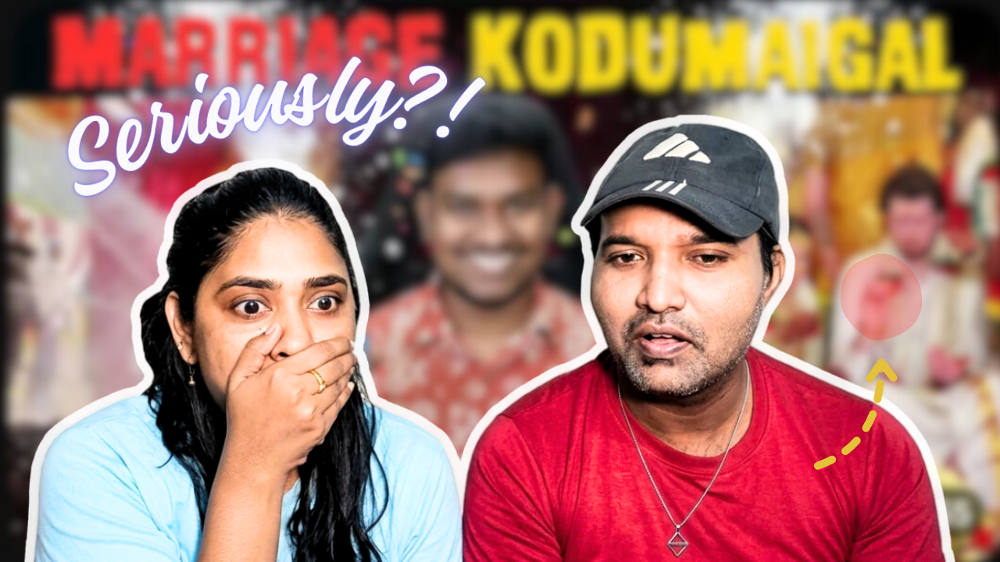

This redesign focused on improving visual hierarchy, emotional storytelling, and click-through potential by simplifying cluttered elements and directing viewer attention more strategically.
The goal was not just to redesign the thumbnail visually, but to improve how quickly the viewer understands the emotion, context, and curiosity trigger within seconds of seeing it on a crowded YouTube feed.

The original thumbnail had energy — but every element was fighting for attention at the same time.
The redesign removes that chaos by softening the background and pushing the reactions into the spotlight first.
The result feels cleaner, sharper, and instantly easier to process while scrolling.
The white contour outline creates separation between the subjects and the busy background.
Instead of blending into the scene, the characters now feel like they jump out of the screen — especially on mobile feeds where thumbnails appear tiny.
“Video Reaction” explains the format.
“Seriously?!” creates curiosity.
The redesign shifts the thumbnail from simply describing the content to making viewers emotionally react before clicking.
The yellow arrow acts like a silent storyteller.
It subtly points viewers toward the “problem” in the scene and creates an open loop in their mind:
“Wait… what happened there?”